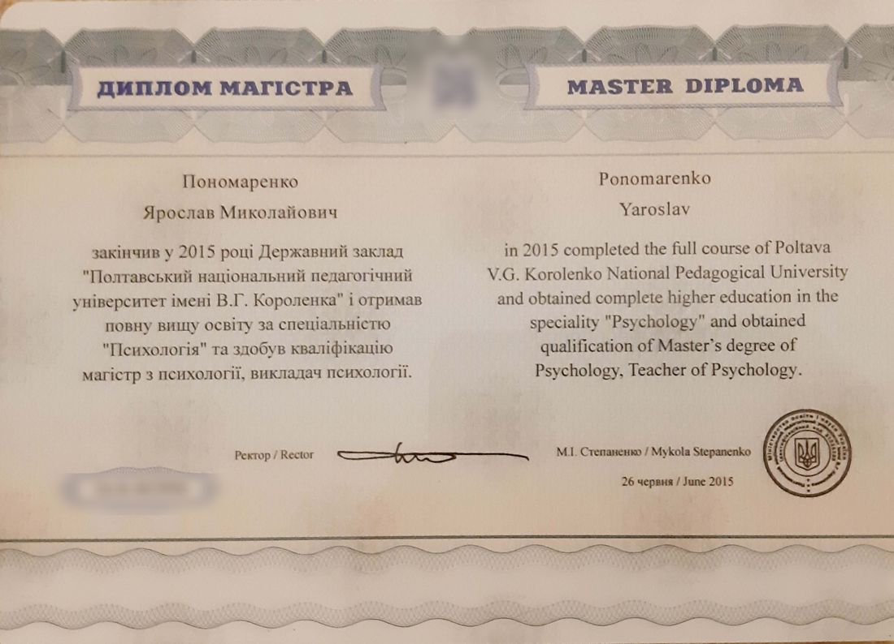
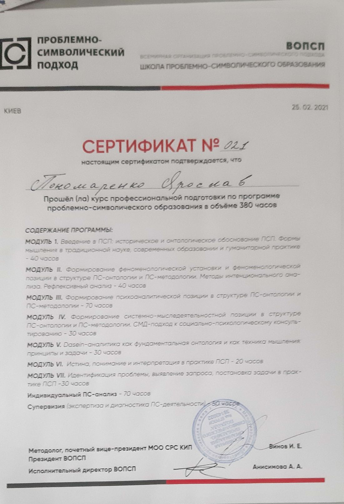

2019–2025 — частный центр LAB, Киев: специалист проекта, ведущий терапевтических групп, работа с детьми, подростками и взрослыми
с апреля 2022 — консультант платформы психологической помощи Tellme («Розкажи мені»)
2026 — принимаю очно в Батуми и онлайн
Образование
2010–2015
Полтавский национальный педагогический университет имени В. Г. Короленко. Специальность «Психология», квалификация — магистр психологии, преподаватель психологии
2010–2018
Проходил обучение проблемно-символическому подходу у Игоря Винова, доцента Института кататимно-имагинативной психотерапии (Гёттинген), основателя Киевской школы мышления
2021
Программа проблемно-символического образования, 380 часов: введение в ПСП, феноменологическая установка и интенциональный анализ, психоаналитическая позиция, СМД-подход, Dasein-аналитика, истина и интерпретация, работа с запросом. Включая 70 часов индивидуального анализа и 50 часов супервизии
2018–2021
Семинарские чтения «Азбука психоанализа», 180 часов
2010–2025
Семинары, ателье и игры школы проблемно-символического образования — сертификаты по ссылке
с 2015
Член методологического совета Всемирной организации проблемно-символического подхода
Проработанные тексты в обучении
Аристотель, «О душе». Кант, «Пролегомены ко всякой будущей метафизике». Фрейд, «Лекции по введению в психоанализ». Гуссерль, «Идеи к чистой феноменологии и феноменологической философии». Хайдеггер, «Бытие и время»; «К философии (О событии)». Бион, «Научение через опыт переживания». Кляйн, «Зависть и благодарность». Мамардашвили и Пятигорский, «Символ и сознание». Щедровицкий, «Знак и деятельность».
Для практики
Собственный анализ — семь лет.
Супервизия дважды в месяц.
Участие в гегелевской лаборатории Киевской школы мышления: «Феноменология духа».
Освіта і практикадокументи, сертифікати
Освіта і практика
Практикую консультування та аналіз з 2017 року.
2017–2025 — у Києві
2019–2025 — приватний центр LAB, Київ: фахівець проєкту, ведучий терапевтичних груп, робота з дітьми, підлітками та дорослими
з квітня 2022 — консультант платформи психологічної допомоги Tellme («Розкажи мені»)
2026 — приймаю очно в Батумі та онлайн
Освіта
2010–2015
Полтавський національний педагогічний університет імені В. Г. Короленка. Спеціальність «Психологія», кваліфікація — магістр психології, викладач психології
2010–2018
Проходив навчання проблемно-символічному підходу в Ігоря Вінова, доцента Інституту кататимно-імагінативної психотерапії (Гьоттінген), засновника Київської школи мислення
2021
Програма проблемно-символічної освіти, 380 годин: вступ до ПСП, феноменологічна установка та інтенційний аналіз, психоаналітична позиція, СМД-підхід, Dasein-аналітика, істина та інтерпретація, робота із запитом. Включно з 70 годинами індивідуального аналізу та 50 годинами супервізії
2018–2021
Семінарські читання «Абетка психоаналізу», 180 годин
Член методологічної ради Всесвітньої організації проблемно-символічного підходу
Опрацьовані тексти в навчанні
Арістотель, «Про душу». Кант, «Пролегомени до кожної майбутньої метафізики». Фрейд, «Лекції зі вступу до психоаналізу». Гуссерль, «Ідеї до чистої феноменології та феноменологічної філософії». Хайдеггер, «Буття і час»; «До філософії (Про подію)». Біон, «Научіння через досвід переживання». Кляйн, «Заздрість і вдячність». Мамардашвілі і П'ятигорський, «Символ і свідомість». Щедровицький, «Знак і діяльність».
Для практики
Власний аналіз — сім років.
Супервізія двічі на місяць.
Участь у гегелівській лабораторії Київської школи мислення: «Феноменологія духу».
Консультированиеусловия работы
Консультирование
В работе использую «Проблемно-символический подход», который включает в себя средства психоанализа, феноменологии, Dasein-аналитики, экзистенциального направления и онтологической герменевтики. Сам подход входит в метод Символдрамы.
Возможно вместе с вами увидеть проблему и различить её как собственную и несобственную, подлинную и неподлинную. Это могут быть проблемы близких, трудности, навязанные в прошлом, или же вы не можете оказаться вблизи решения, но требуете его от себя. Так открываются новые возможности для понимания причин проблем и изменений.
Мой личный смысл в этой работе — создание пространства, где возможна встреча с собой и с другим и где раскрывается то, что было утаено или не высказано.
С чем обращаются
неуверенность в себе, заниженная самооценка, тревожность;
трудности в отношениях с близкими;
внутренняя пустота, чувство безысходности;
нарушения пищевого поведения: анорексия, булимия, компульсивное переедание;
зависимости: игровая, алкогольная, от психоактивных веществ, от отношений;
панические атаки, бессонница, страхи и фобии, телесные проявления тревоги;
обсессивно-компульсивное расстройство (ОКР), навязчивые мысли и действия;
горе после утраты, одиночество;
стресс и последствия травмирующих событий, посттравматическое стрессовое расстройство (ПТСР) и комплексное ПТСР;
конфликты в семье, на работе, с собой;
психозы, аутистическое поведение;
расстройства личности (шизоидное, пограничное, нарциссическое и др.);
подавленность, апатия, потеря интереса к делам и общению, избегание контактов.
Условия работы
Встречи для консультаций называют сессиями — это такая «долгая» встреча с паузами между сессиями. Сами сессии проводятся очно и онлайн, на русском и украинском языках. Личные встречи возможны по договорённости. Время сессии обычно около сорока минут, рекомендуется регулярность — одна-две встречи в неделю.
Отношения и взаимодействие в работе строятся на искренности и на готовности обсуждать противоречия, сомнения и трудные вопросы — с обеих сторон.
В случаях отмены или переноса по времени важно предупредить не позднее чем за сутки. При более поздних изменениях понадобится оплатить пропуск полностью, кроме форс-мажорных обстоятельств. Если встречу менее чем за сутки отменяет консультант, следующая проводится бесплатно.
Опоздание засчитывается в счёт времени встречи. Если опаздывает консультант, встречу можно продлить на это время.
Оплата возможна до встречи или после неё; реквизиты сообщаются лично.
Факт обращения и содержание встреч конфиденциальны.
С детьми работа ведётся очно, когда это возможно. Онлайн — начиная с восьми-девяти лет; с младшими онлайн-работа не проводится. Длительность встречи и регулярность те же, что при работе со взрослыми; стоимость не отличается.
Работа ведётся с ребёнком — без родителей либо, при потребности ребёнка, в их присутствии.
Если встречи проходят без родителей, проводятся отдельные родительские сессии раз в месяц-полтора.
Содержание встреч с ребёнком родителям не передаётся. Исключения — сведения о криминальных преступлениях и кризисные обстоятельства, при которых есть угроза жизни и здоровью ребёнка.
С подростками работа начинается только при их собственном согласии. Записать подростка без его ведома невозможно: без согласия консультирование не имеет смысла.
У своїй практиці я використовую «Проблемно-символічний підхід», який включає в себе засоби психоаналізу, феноменології, Dasein-аналітики, екзистенційного напряму та онтологічної герменевтики. Сам підхід входить до методу Символдрами.
Можливо разом з вами побачити проблему і розпізнати її як власну і невласну, справжню і несправжню. Це можуть бути проблеми близьких, труднощі, нав'язані в минулому, або ж ви не можете опинитися поблизу рішення, але вимагаєте його від себе. Так відкриваються нові можливості для розуміння причин проблем і змін.
Мій особистий сенс у цій роботі — створення простору, де можлива зустріч із собою та з іншим і де розкривається те, що було приховане або не висловлене.
З чим звертаються
невпевненість у собі, занижена самооцінка, тривожність;
труднощі у стосунках із близькими;
внутрішня порожнеча, відчуття безвиході;
порушення харчової поведінки: анорексія, булімія, компульсивне переїдання;
залежності: ігрова, алкогольна, від психоактивних речовин, від стосунків;
панічні атаки, безсоння, страхи й фобії, тілесні прояви тривоги;
обсесивно-компульсивний розлад (ОКР), нав'язливі думки й дії;
горе після втрати, самотність;
стрес і наслідки травматичних подій, посттравматичний стресовий розлад (ПТСР) і комплексний ПТСР;
конфлікти в сім'ї, на роботі, із собою;
психози, аутистична поведінка;
розлади особистості (шизоїдний, межовий, нарцисичний та ін.);
пригніченість, апатія, втрата інтересу до справ і спілкування, уникання контактів.
Умови роботи
Зустрічі для консультацій називають сесіями, це така «довга» зустріч із паузами між сесіями. Самі сесії проводяться очно та онлайн. Особисті зустрічі можливі за домовленістю. Час сесії зазвичай близько сорока хвилин, рекомендована регулярність — одна-дві зустрічі на тиждень.
Стосунки і взаємодія в роботі формуються на відвертості та на готовності обговорювати суперечки, сумніви й прояснювати питання — з обох боків.
Для випадків змін часу чи відміни зустрічі важливо попередити про це не пізніше ніж за добу. Якщо зміни відбуваються без попередження, тоді пропуск потрібно буде оплатити повністю, окрім форс-мажорних обставин. Якщо зустріч менш ніж за добу скасовує консультант, наступна проводиться безкоштовно.
Запізнення зараховується в рахунок часу зустрічі. Якщо запізнюється консультант, зустріч можливо продовжити на цей час.
Оплата можлива до зустрічі або після неї; реквізити повідомляються особисто.
З дітьми робота ведеться очно, коли це можливо. Онлайн — починаючи з восьми-дев'яти років; з молодшими онлайн-робота не проводиться. Тривалість зустрічі й регулярність ті самі, що й у роботі з дорослими; вартість не відрізняється.
Робота ведеться з дитиною — без батьків, або за потреби дитини у їхній присутності.
Якщо зустрічі проходять без батьків, проводяться окремі батьківські сесії раз на місяць-півтора.
Зміст зустрічей з дитиною батькам не передається. Винятки — відомості про кримінальні злочини та кризові обставини, за яких є загроза життю і здоров'ю дитини.
З підлітками робота починається лише за їхньої власної згоди. Записати підлітка без його відома неможливо: без згоди консультування не має сенсу.
Чтения проводятся с 2019 года. Тексты авторов прорабатываются в разных планах — смысла, авторской позиции, содержания и впечатления участников. Занятия проходят в зуме, на русском языке, с 11:00 до 13:00 по Киеву.
Медленное чтение направлено на разбор текста и его смыслов. Для тех, кому интересно, как устроены мышление, восприятие и понимание — и что из этого следует для собственной жизни, работы, отношений. Участие рассчитано не только на специалистов, но и на тех, кто интересуется психологией и философией. Предварительной подготовки не требуется. Присоединиться можно и посреди текста, по запросу.
Прочитано с 2019 года
Августин, «Об учителе»
Гуссерль, «Феноменология внутреннего сознания времени»; «Картезианские размышления»
Фреге, «Смысл и значение»
Выготский, «Мышление и речь»
Хайдеггер, «Что такое метафизика»
Лакан, семинары, тома 5 и 10
Кьеркегор, «Страх и трепет»; «Повторение»; «Понятие страха»
Участие платное, детальнее в переписке.
Читанняспільна робота над текстом
Читання
Читання проводяться з 2019 року. Тексти авторів опрацьовуються в різних планах — сенсу, авторської позиції, змісту та враження учасників. Заняття відбуваються в зумі, з 11:00 до 13:00 за Києвом.
Повільне читання спрямоване на розбір тексту та його сенсів. Для тих, кому цікаво, як влаштовані мислення, сприйняття й розуміння — і що з цього випливає для власного життя, роботи, стосунків. Участь розрахована не лише на фахівців, а й на тих, хто цікавиться психологією та філософією. Попередньої підготовки не потрібно. Приєднатися можна й посеред тексту, за запитом.
Прочитано з 2019 року
Августин, «Про вчителя»
Гуссерль, «Феноменологія внутрішньої свідомості часу»; «Картезіанські розмисли»
Фреге, «Смисл і значення»
Виготський, «Мислення і мовлення»
Хайдеггер, «Що таке метафізика»
Лакан, семінари, томи 5 і 10
К'єркегор, «Страх і трепет»; «Повторення»; «Поняття страху»
Участь платна, детальніше в переписці.
Кино-лабораторияпро драму и режиссуру
Кино-лаборатория
Формат создан для тех, кому интересно кино-искусство в разрезе понимания роли драматургии в восприятии и впечатлении на человека. С последовательным исследованием средств драмы и режиссуры, авторского стиля и влияния кино на культурно-исторические процессы.
Встречи проходят раз в месяц по субботам, с 19:30 до 22:00, онлайн. Просмотр фильма проходит самостоятельно и заранее. На встрече — обсуждение в обсерватории: собирается увиденное, впечатление и содержание произведения, без оценочности. Затем идёт разбор драматургии и средств, которыми работает автор.
Авторское кино — Брессон, Бергман, Тарковский, Фассбиндер, Осима Нагиса, Ханеке и другие.
Способ участия — открытый, постоянное участие не обязательно, можно прийти на отдельную встречу. Плата по возможности.
Формат створено для тих, кому цікаве кіно-мистецтво в розрізі розуміння ролі драматургії у сприйнятті та враженні на людину. З послідовним дослідженням засобів драми і режисури, авторського стилю та впливу кіно на культурно-історичні процеси.
Зустрічі відбуваються раз на місяць по суботах, з 19:30 до 22:00, онлайн. Перегляд фільму відбувається самостійно і заздалегідь. На зустрічі — обговорення в обсерваторії: збирається побачене, враження та зміст твору, без оцінковості. Потім іде розбір драматургії і засобів, якими працює автор.
Авторське кіно — Брессон, Бергман, Тарковський, Фассбіндер, Осіма Нагіса, Ханеке та інші.
Спосіб участі — відкритий, постійна участь не обов'язкова, можна прийти на окрему зустріч. Плата за можливості.
Вы можете написать письмо или сообщение и указать, что интересует — консультирование, чтения или кино-лаборатория. Подробности можем обсудить в короткой беседе.
Телефон — +380 93 234 20 27. На этом же номере WhatsApp, Viber, Telegram
Экстренной помощи этот адрес не оказывает: при острых состояниях следует обращаться в неотложную службу.
Зв'язокпошта і телефон
Зв'язок
Ви можете написати листа або повідомлення і вказати, що цікавить — консультування, читання чи кіно-лабораторія. Подробиці можемо обговорити в короткій бесіді.
Телефон — +380 93 234 20 27. На цьому ж номері WhatsApp, Viber, Telegram
Екстреної допомоги ця адреса не надає: за гострих станів слід звертатися до невідкладної служби.
Конвенцияусловия оказания услуг
Конвенция
Это конвенция, по которой я работаю. Ознакомьтесь, пожалуйста, и напишите ниже о своём согласии, если согласны, либо свои возражения.
Настоящим удостоверяется, что клиент ознакомлен с условиями консультирования и даёт согласие со следующими пунктами:
Если встреча онлайн, вы переходите по ссылке или звоните в своё оговорённое время;
Длительность одной индивидуальной сессии составляет 40 минут; при необходимости процесса работы может быть сокращена или продлена по совету консультанта;
Форма консультации: очная и дистанционная (онлайн);
Рекомендуемая регулярность встреч 1–2 раза в неделю;
Анализант и консультант придерживаются искренности и открытости в отношениях, готовности обсуждать любые вопросы, сомнения, противоречия;
О смене времени или отмене встречи анализант предупреждает минимум за 24 часа. В случаях платной работы анализант оплачивает полную стоимость сессии, за исключением форс-мажорных обстоятельств;
Если сессия отменяется консультантом менее чем за 24 часа, следующая сессия проводится бесплатно, за исключением форс-мажорных обстоятельств;
Консультации проходят при условии предварительной, а также постоплаты. Реквизиты сообщаются лично;
Факты обращений и содержание сессий являются анонимными и конфиденциальными;
Опоздание анализанта учитывается во время сессии; из-за опоздания консультанта время сессии может быть продлено либо иное по согласию анализанта;
Совместная работа проходит с возможностью провести завершающую сессию для согласования паузы или остановки в работе.
[ позже сюда добавится договор оферты ]
Конвенціяумови надання послуг
Конвенція
Це конвенція, за якою я працюю. Ознайомтесь, будь ласка, і напишіть про свою згоду, якщо згодні, нижче, або свої заперечення.
Цим засвідчується, що клієнт ознайомлений з умовами консультування та дає згоду з наступними пунктами:
Якщо зустріч онлайн, ви переходите за посиланням або телефонуєте у свій обумовлений час;
Тривалість однієї індивідуальної сесії складає 40 хвилин, та в разі необхідності процесу роботи може бути скорочено або подовжено за порадою консультанта;
Форма консультації дистанційна (онлайн);
Аналізант та консультант дотримуються щирості та відкритості у відносинах, і готовності обговорювати будь-які питання, сумніви, протиріччя;
Про зміну часу чи відміну зустрічі аналізант має попередити мінімум за 24 години. У випадках платної роботи аналізант повністю оплачує повну вартість сесії, за винятком форс-мажорних обставин;
Якщо сесія відміняється консультантом менше ніж за 24 години, в цьому випадку наступна сесія проводиться безкоштовно, за винятком форс-мажорних обставин;
Факти звернень і зміст сесій являються анонімними та конфіденційними;
Запізнення аналізанта враховуються в час сесії, через запізнення консультанта час сесії може бути продовжений, чи інше за згодою аналізанта;
Спільна робота проходить із можливістю провести «завершуючу» сесію для погодження паузи чи зупинки в роботі.
Документыперечень и сканы
Документы
Высшее образование

Диплом магистра. Полтавский национальный педагогический университет имени В. Г. Короленко, 26 июня 2015. Номер бланка и код скрыты.
Проблемно-символическое образование
Семинары, ателье и игры школы проблемно-символического образования, 2012–2021. Около тридцати свидетельств, сгруппированных по темам.
2013–2015
Феноменология и герменевтика в ПСП, части 2–5; феноменология, ступени 3, 5, 7, 8; «Феноменология внутреннего сознания времени. Время и бытие по Хайдеггеру»
2013–2014
«Дискурсы», части 1–3; «Власть и дискурсы власти»
2019
«Диагностика личности — по ту сторону структуры и объекта», часть II; «Фундаментальная диагностика личности. От Я до А»
2016–2019
«Тело, бытие и ничто»; «Личность и тело»; «Тело и сексуальность»; «Маска в психозе и неврозе»; «Мужчина и женщина. Что такое свобода?»
2015–2021
Ателье: «Симптом и перенос»; «Дазайн и позиция психоаналитика»; «Феномен и дазайн»; «Интерпретация — констатация — эпохе»; «Место несуществования»; «Поэтика и эстетика души»
2014–2019
Игры: «Авторские проекты и продюсирование»; «Автор — право — личность»; «Автор и время»; «Слово и время»; «Логос — Тело — Голос»

Программа проблемно-символического образования, 380 часов. ВОПСП, Киев, 25 февраля 2021.
Диплом магістра. Полтавський національний педагогічний університет імені В. Г. Короленка, 26 червня 2015. Номер бланка і код приховані.
Проблемно-символічна освіта
Семінари, ательє та ігри школи проблемно-символічної освіти, 2012–2021. Близько тридцяти свідоцтв, згрупованих за темами.
2013–2015
Феноменологія і герменевтика в ПСП, частини 2–5; феноменологія, ступені 3, 5, 7, 8; «Феноменологія внутрішньої свідомості часу»
2013–2014
«Дискурси», частини 1–3; «Влада і дискурси влади»
2019
«Діагностика особистості — по той бік структури та об'єкта», частина II; «Фундаментальна діагностика особистості»
2016–2019
«Тіло, буття і ніщо»; «Особистість і тіло»; «Тіло і сексуальність»; «Маска в психозі та неврозі»; «Чоловік і жінка. Що таке свобода?»
2015–2021
Ательє: «Симптом і перенесення»; «Дазайн і позиція психоаналітика»; «Феномен і дазайн»; «Інтерпретація — констатація — епохе»; «Місце неіснування»; «Поетика й естетика душі»
2014–2019
Ігри: «Авторські проєкти і продюсування»; «Автор — право — особистість»; «Автор і час»; «Слово і час»; «Логос — Тіло — Голос»
Програма проблемно-символічної освіти, 380 годин. ВОПСП, Київ, 25 лютого 2021.Семінарські читання «Абетка психоаналізу», 180 академічних годин, 2018–2021.Ательє «Поетика й естетика душі. Аналіз і терапія особистості», 36 годин, травень 2021.Гра «Логос — Тіло — Голос. Діалог і комунікація», 60 годин, вересень 2019.Ательє «Місце неіснування — розрив і покриття. Час в аналізі особистості», 32 години, 2019.
Работа не будет эффективной, если вы ожидаете, что ваши проблемы устранятся сами. И пользы будет немного, если вы хотите услышать мнение эксперта, который подтвердит, что ответственность лежит на других. В психотерапии и анализе я работаю совместно с клиентом, но не вместо него. Я также не работаю с теми, кто не готов анализировать ситуации самостоятельно и ожидает готовых решений.
«Что такое хорошо и что такое плохо»
В каждом случае человек соотносит своё поведение с собственным представлением о норме и о допустимом отношении к ней. Поэтому в нашей работе есть возможность не оценивать, а рассматривать, какие цели вы преследуете, и, разобравшись с вариантами, понять ваше собственное отношение к ним. Либо отыскать вашу личную возможность принять решение самостоятельно.
«Кто виноват»
Когда ситуация исследуется через ваш рассказ и видно ваше собственное отношение к ней, идея искать ответственность на стороне оказывается непродуктивной. Кроме того, в анализе нет функции судейства. Но, разобравшись со своим положением, вы сможете найти подходящие для ситуации возможности или необходимые компромиссы для её разрешения.
«Хочу управлять, чтобы другие делали то, что нужно мне, и хочу управлять отношением к себе»
Изменив собственное отношение к коллективу и команде, вы достигнете большего, чем тактиками кнута и пряника. Подробно рассмотреть, что в стиле управления может быть причиной конфликтов и срывов, — это приближает вас к цели, тогда как манипуляция носит кратковременный характер. Каждый человек имеет право совершать ошибки, и принятие ответственности за них — первый и необходимый этап в формировании управленческой позиции и отношения.
«Скажите, как поступить и не ошибиться в выборе»
Анализ и психотерапия — это место и позиция, а человек, который их занимает, не должен навязывать свой личный опыт. Нет необходимости давать советы и рекомендации: человек волен принимать решения самостоятельно.
Наша работа поможет вам рассмотреть проблему с разных сторон и начать поиск путей её разрешения. В обсуждении, помимо нового взгляда на неё, у вас сформируется и опыт преодоления. Окончательное решение о том, как действовать, всегда останется за вами, и только вы несёте ответственность за свои поступки.
Чого немає в психотерапії та аналізі
Робота не буде ефективною, якщо ви очікуєте, що ваші проблеми усунуться самі. І користі буде мало, якщо ви хочете почути думку експерта, який підтвердить, що відповідальність лежить на інших. У психотерапії та аналізі я працюю разом із клієнтом, але не замість нього. Також я не працюю з тими, хто не готовий аналізувати ситуації самостійно й чекає готових рішень.
«Що таке добре і що таке погано»
У кожному випадку людина співвідносить свою поведінку з власним уявленням про норму та про допустиме ставлення до неї. Тому в нашій роботі є можливість не оцінювати, а розглядати, які цілі ви переслідуєте, і, розібравшись із варіантами, зрозуміти ваше власне ставлення до них. Або знайти вашу особисту можливість ухвалити рішення самостійно.
«Хто винен»
Коли ситуація досліджується через вашу розповідь і видно ваше власне ставлення до неї, ідея шукати відповідальність деінде виявляється непродуктивною. Крім того, в аналізі немає функції судді. Але, розібравшись зі своїм становищем, ви зможете знайти доречні для ситуації можливості або потрібні компроміси для її розв'язання.
«Хочу керувати, щоб інші робили те, що потрібно мені, і хочу керувати ставленням до себе»
Змінивши власне ставлення до колективу й команди, ви досягнете більшого, ніж тактиками батога і пряника. Докладно розглянути, що в стилі керування може бути причиною конфліктів і зривів, — це наближає вас до мети, тоді як маніпуляція має короткочасний характер. Кожна людина має право помилятися, і прийняття відповідальності за помилки — перший і необхідний етап у формуванні керівної позиції та ставлення.
«Скажіть, як вчинити, і не помилитися у виборі»
Аналіз і психотерапія — це місце і позиція, а людина, яка їх посідає, не повинна нав'язувати свій особистий досвід. Немає потреби давати поради й рекомендації: людина вільна ухвалювати рішення самостійно.
Наша робота допоможе вам розглянути проблему з різних боків і розпочати пошук шляхів її розв'язання. В обговоренні, окрім нового погляду на неї, у вас сформується й досвід подолання. Остаточне рішення про те, як діяти, завжди залишиться за вами, і тільки ви несете відповідальність за свої вчинки.
Почему я не работаю с полной закрытостью, самодовольством и требованием комфорта
Попадая в какое-то пространство, мы можем видеть его как новое — и даже если оно знакомо, то новым остаётся консультант, другой человек. И вы пытаетесь пронести в это новое всё, что у вас уже есть: приветствие, темы, способы и язык общения. В обычных социальных пространствах принимается то, что имеет социально приемлемый эквивалент, а остальное отбрасывается. В случае с консультацией прийти на неё выпившим, под действием наркотиков, параллельно играть в игры или вести ещё одно общение — недопустимо по формату самой работы.
Конечно, сам консультант, как и пациент, иногда, предупредив, может отвлечься от сессии ради того, что требует внимания именно сейчас. Но если пациент, входя в поле работы, где возможны некие сдвиги и изменения, пытается сразу оставить себе привилегии, то зачем он пришёл? Сохранить нечто, что уже существует в его жизни? Подтвердить, что он не изменён? Выйти с мыслью, что и «этот» ничего не смог со мной поделать?
Мне кажется, что когда я пытаюсь купить продукты в магазине и сохранить все деньги в кошельке — это будет просто воровством. А когда я попадаю в пространство, связанное с моей проблемой, и не приношу туда всего своего участия, чувств, внимания и остального — что я делаю на самом деле?
В нынешних условиях озабоченности своим комфортом и жизнью «по своему хочу» такое положение не удивительно. Сфера услуг со всех сторон готова угодить любым амбициям потребителей. И безграничное предложение, которое в своих целях использует потребителей как объекты для производства и прибыли, видимо, сообщает, что можно получить всё что угодно, если достаточно сильно и навязчиво сформировать требование.
На территории консультирования невозможно прийти с тем, что не позволяет взаимодействовать с консультантом. Если сделать это допустимым, пространство общения и открытости станет пространством «ведущего и ведомого», в котором тот, у кого проблема, — всего лишь жертва условий, а консультант обязан сделать всё, чтобы жертве было хорошо и комфортно.
Я пришёл на онлайн-видеосессию, чтобы преодолеть трудность общения с другими людьми, и не хочу включать видео. Возможно, я хочу поговорить о проблеме, но не готов отказаться от сёрфинга по интернету параллельно беседе. А кто-то приходит иначе — не прячется и не отвлекается, а держится с вызовом: «ну попробуйте, посмотрим, что у вас получится». Это не грубость сама по себе, а тоже своего рода отсутствие — только не через уклонение, а через заранее решённое неверие в то, что здесь вообще что-то может произойти.
В каких-то случаях возможно подыграть ребёнку, который прячет лицо в сложном переживании визуального контакта, и спрятаться за ладони, как в прятках, сказав «ку-ку». Но важно увидеть границы: того, зачем человек обратился на консультацию, что он ожидает от неё и возможно ли это на тех условиях, которые он хочет. Иначе это может стать подталкиванием и выкачиванием времени и денег пациента. Тогда с другими пациентами и с собой могут начаться такие же игры.
Суть — в пространстве смысла не допускать согласия в имитации и симуляции, например внимания и присутствия участников. Путаница, где прятки становятся целью, а не средством, помешает идентификации проблемы. Начав обманываться в одном месте, трудно устоять и не сделать это везде. А те, кто приходит за тем, чтобы раскрыть свои возможности, будут обмануты тем, кто должен был нести за это ответственность, но не смог.
Конечно, ошибки неизбежны, и бывало, что после сессии на супервизии становились очевидными мои собственные тупики и сложности. Но сегодня, обнаруживая приглашение в такую игру, мне не нужно долго думать над ним. Понимаю, что, отказавшись работать, потеряю пациента. С потерей я готов согласиться, с игрой в консультацию — нет: из собственного смысла не обманывать ни себя, ни других.
Предварительное рассмотрение болезни, которая на поверхности кажется понятной.
Какое может быть понимание болезни у ребёнка? Примерно такое: его обеспокоенные близкие, мать или кто-то ещё, начинают вести себя с ним необычно по сравнению с повседневной жизнью. И сам ребёнок оказывается отстранён от привычного самочувствия и состояния тела. Он может чувствовать слабость, рассеянность и другие похожие на болезнь ощущения.
Со временем у ребёнка складывается первичное отношение к болезни, хотя это ещё не совсем его собственное отношение. Позже, на фоне того, к чему болезнь его не допустит — пропущенный день рождения друга, несостоявшаяся поездка, отменённый праздник с родными, — обозначится точнее: болезнь есть нечто мало понятное, мешающее привычному ходу жизни и обыденным порядкам между людьми. С массой неясных медицинских объяснений, не до конца понятных и самим медработникам.
Ещё позже, через многократное повторение отношения к болезни — своей и чужой, — могут появиться привычные действия, чтобы не заболеть. Носить зимой шапку и шарф, не сидеть долго на холодном, не пренебрегать простыми средствами от перегрева и переохлаждения, чистить зубы. Принимать назначенное врачом лечение, проходить обследования. Это видимые изменения, связанные с телом и с тем, что в нём буквально может быть измерено и соответственно измерениям вылечено.
Тогда же может появиться и понимание отстранения от тех или иных жизненных событий, и даже смягчение того, что в детстве казалось несвоевременным и ненужным, — болезни, из-за которой что-то не состоялось. Если к этому моменту были длительные и затяжные периоды болезни, человек может испытывать яркие эмоциональные реакции — страх, раздражение — и сильные чувства ненависти и злости.
Когда мы сами не болеем, можно заметить, что эти чувства причиняют болеющему порой не меньше беспокойства, чем сама болезнь. И хотя бы внешне, в наблюдении со стороны, мы можем помочь ребёнку, сказав: у тебя высокая температура, поэтому твоя слабость понятна, и она пройдёт. Или поддержать близкого в моменты упадка духа при длительных заболеваниях, напомнив, что трудности носят временный характер. Если они могут пройти — они пройдут, а если нет, то, может быть, это более крупная задача, чем виделось ранее.
Потому что кроме болезней есть их крайняя точка. Там, по большому счёту, крайнюю и общую болезнь не лечат видимым образом в принципе. Она называется смертью, и к этой болезни любая медицина могла только сопровождать, а после — констатировать, что сопровождение закончилось.
Мы разделяем видимое и тем самым допускаем что-то другое. Что, если болезнь, как говорят, невидима, и кто-то чувствует себя не так, болезненно иначе, чем просто физиологически?
При попытках определить это «не так» на месте определения вырастает густой и неясный лес неопределённости. Каждый, кто смотрит в него, определяет болезнь и симптомы так, что тому, для кого это определение делалось, ясность словами не передаётся. Что тогда? Самочувствие или жизненные неустроенности продолжаются. Болеющий наблюдает жизнь других людей и через сравнение видит, что у него что-то не так. Но проявить саму болезнь конкретно и определённо не получается.
Например.
Девушка, работающая в эскорте, серьёзно интересуется отношениями с мужчиной для создания семьи. При этом в её отношении к мужчинам уже заложено потребительское основание, и то, как оно сказывается на возможности честных и открытых отношений, остаётся вне поля зрения.
Женщина после двух острых психотических эпизодов рассчитывает устроиться на работу и жить как многие. Реабилитация после психоза может занимать несколько лет, и расхождение между сроком восстановления и ожиданием обнаруживается не сразу.
Мужчина, ведущий замкнутый образ жизни больше сорока лет, сталкивается с переживаниями, связанными со страхом и смертью. Отношение к ним предполагается получить извне: через антидепрессанты и несколько консультаций.
Девушка, чьё состояние держится в зоне эмоциональных качелей, решает измениться, сохранив при этом прежний способ жизни и прежний круг общения.
Какими могут быть общие отношения болезненности — душевной и физиологической? Такие вопросы поднимаются не впервые. Можно предположить, что вторые болезни мало чем отличаются от первых: и те и другие могут быть разного рода дискомфортом на пути к смерти, которую вряд ли назовёшь новостью в истории человечества. Кому-то покажется, что разница в дискомфорте невелика.
Мне так не кажется. Простуда не длится круглый год, даже у онкологических заболеваний бывают ремиссии. Тот, кто оказался в зоне душевной болезни, может быть лишён таких преимуществ, как спокойствие и отдых, очень долго, многие годы. И это только обостряет его состояние.
Августин Аврелий писал о смертельной жизни и жизненной смерти и не рассматривал вопросы жизни и смерти отдельно.
Мне в слове «болезнь» слышится корень, связанный с болью. Боль как нечто, что противостоит чему-то — может быть, безболезненности, может быть, покою. Но сама по себе боль в физиологии крайне важна как сигнал. Без неё тело в своих функциях многое теряет: известна даже болезнь, при которой человек не чувствует боли.
Можно ли допустить, что любые болезни сами по себе не хороши и не плохи, а являются сигналами для живущих — разного рода сигналами для разных ситуаций? Не стоит ожидать, что если сегодня ребёнок сослался на болящий живот и обманом получил выходной, завтра он не будет искать следующего облегчения следующим обманом. Мне кажется, будет. И тогда телесные ощущения направятся по ложным путям: голод и сытость, ощущения мышц и суставов и многие другие связи с телом будут искажены и негодны для понимания самочувствия. Крайняя степень таких подмен — ипохондрия.
И мы все находимся каждый в своём отношении к смерти. Если смерть — абсолютная необходимость, а круги болезней, как круги на воде, помогают отражать действительность того, как и чем живёт человек, то возникает вопрос: как различать болезни между собой, как себе помогать?
В современной психологии придумали метафору психосоматики. Попробуйте сказать своим векам: «не двигайтесь», а сердечной мышце: «не сокращайся». Не получится, они не послушаются. Иногда объяснения мало что объясняют. Конечно, если я невнимателен к себе и, не застёгивая куртку зимой, простужаюсь — это простая физиология.
И при этом в груди и теле у меня могут быть разные чувственные состояния и переживания, отличимые от обычной телесности. Чему верить? И как быть с тем, что мы все чувствуем? Возможно ли это вообще?
«Всё мне можно, но не всё полезно. Всё мне полезно, но не всё должно мною владеть».Апостол Павел, Первое послание к Коринфянам
С самых первых мгновений жизни мы можем наблюдать «странные пары». В одном уже есть то, что ищет кто-то другой. В ученике есть место для учения и учителя. В глине и камне — возможность воплотить замысел и стать местом для творчества. В звуке и слове — пространство для выражения писателя, поэта.
Эта «парность» не парная. В ней больше одного и не меньше трёх: между учеником и учителем стоит учение, между мастером и камнем — замысел, между поэтом и словом — то, что должно быть сказано. Двое связаны не напрямую, а через третье, и держатся они им. Взаимная нуждаемость, взаимная открытость — всё это приближается, только если всмотреться внимательнее.
Может быть и другая форма связи — например доступное всем переживание чувства любви, которое не всегда обоснованно выбирает ту или того, или не то и не того. Здесь и видно, насколько третье важно: если оно есть, двое обращены к нему вместе; если его нет, остаются только двое, и один становится для другого местом восполнения.
Но есть связи, которые строятся уже по ходу жизни. Человек создаёт в себе привычку чистить зубы, делать зарядку, улыбаться окружающим, быть вежливым. Или — что сложнее — привычку быть свободным от привычек других людей. Привычку приходить вовремя или опаздывать. Привычку быть нужным, нравиться, подстраиваться.
С привычкой происходит вот что: третье из неё уходит. Было действие ради чего-то — стало действие само по себе. Остаётся устоявшийся порядок, то, как «само собой так повелось», и держится он уже ничем, кроме повторения.
Там, где третье сброшено со счетов, привычка получает иное, более тяжёлое имя — зависимость. Уже не двое, обращённые к чему-то, а один, вцепившийся в объект: объект и нуждающийся, и больше ничего. Связь переходит в постоянную и зависимую форму, где остаётся наслаждение в тупике. Именно такая связь и может владеть — удерживать в ней больше нечему.
Почему я выбираю именно это, а не другое? Как именно происходит принятие решения — если оно вообще происходит? Мне советуют, убеждают, вымогают, или мной манипулируют, подчиняют, или я сам соглашаюсь? Меня соблазняют, обещая, что это «не проблемно и без последствий», или я уже давно живу так, как будто последствий не существует?
Некоторые перемены проходят почти незаметно. Осень можно не заметить, если сменилась работа или случился переезд в другой город. Но не заметить, как из знакомого ребёнка прорезывается кто-то новый, у тех, кто живёт рядом, вряд ли получится. Перепады в состояниях и настроениях захватывают на несколько часов или дней.
Почему это переживается как конфликт? Тело в своём росте не притормаживает, а душевные и психологические отношения могут отставать — или, наоборот, опережать. Ребёнка ко всему подготовили, а тело запаздывает, тогда как у друзей уже всё началось.
Можно ли конфликта избежать? Ведь и само рождение — конфликт. На уровне физиологии тело женщины состоит с ребёнком в утробе в «паразитарных» отношениях, которые на определённом этапе требуют освобождения: телу необходимо от него освободиться, а ребёнку — вовремя найти путь наружу.
При этом тот, кто существовал в исключительном положении водоплавающего, рождаясь на воздух, умирает для своего прежнего заключения. И женщина, прежде полностью распоряжавшаяся собой и тем, кто внутри, подчиняется новым условиям, где от её заботы зависит многое.
Тому, у кого не было опыта рождения и родительства, эти перемены не передать словами. Статья ближе к тем, кто имел дело с детьми, — своими или чужими.
Пубертат можно рассматривать как превращение, похожее на рождение: символическую смерть всех прежних форм существования. Только предшествующее существование длилось не девять месяцев, а больше десяти лет. И этот опыт может помогать, а может мешать.
Если ребёнок по-прежнему не знает простых вещей — чистить зубы, помогать по дому, заварить себе чай, — ему будет труднее. Здесь важно найти элементарные стороны существования, которые можно ему передать, сделать их его ответственностью и перестать их контролировать. Да, может появиться первый кариес или он походит в одежде с пятнами. Но следствием этого станет обнаружение себя помимо матери и отца. Без такого открытия себя самого передать ему сколько-нибудь значимую ответственность за уроки или занятия не получится.
Передача не происходит за один раз. Обычно есть связь, через которую вы сначала на словах, а потом и на деле передаёте и отмечаете то, что получается, — и стараетесь не заострять внимание на том, что пока не выходит.
Слово «ребёнок» я употребляю до восемнадцати лет, больше для вас, чем для него. У близких бывает разное видение того, кто такой ребёнок и зачем он живёт рядом. Но основным в этом сожительстве остаётся одно: оно есть отправная точка к его самостоятельному существованию, без подпорок со стороны родных.
Поэтому предлагаю рассматривать такое взаимодействие как переходное — для всех участников, и младших, и старших.
«…жители Макондо пытались бороться с забывчивостью: «Это — корова, её надо доить каждое утро, чтобы иметь молоко, а молоко надо кипятить вместе с кофе, чтобы получился кофе с молоком». Так они жили в ускользающей действительности, которая на мгновение останавливалась словами, чтобы тут же бесследно исчезнуть, как только забудется смысл написанного».Габриэль Гарсиа Маркес, «Сто лет одиночества»
Кто может меняться? Я могу, она может, ребёнок не может или наоборот. Где критерии и необходимости изменений, и того, как я живу? Как это происходит или не происходит? Подмены, обманы, ложь, имитации и симуляции: как эти процессы меняют нас? Эти слова не просто абстрактные термины — они немного описывают то, как мы живём, принимаем решения, взаимодействуем друг с другом и собой.
Подмена, обман, ложь, имитация и симуляция: когда это как?
Подмена может «помогать» удовлетворению некой потребности. Может служить избеганию собственных чувств или ответственности, привести к внутреннему разладу.
Подмена реальных ценностей и смыслов на ложные или второстепенные есть одно из проявлений иллюзий в общении и жизни. Когда человек принимает за важное то, что по сути не является значимым для него, это приводит к внутреннему диссонансу и ощущению пустоты. Так бывает в выборе карьеры, в отношении целей и смыслов, которые не могли быть проверены, так как их критерий остался неизвестен.
В похожем названии «подмена» мы можем узнать изменение того, как уже заведено, и поменять или обменять на что-то другое. Можем ли мы создать критерий перемены так, чтобы видеть её внутренний потенциал и своевременность? Например, нам важно «подменить» грудь матери на качественно новую пищу, для своевременного повышения активности и роста ребёнка. Поступая так, мы сохраняем суть нашей заботы в том, что он получает необходимое для себя.
«Мы рассматриваем описки, оговорки, неправильные действия, забывания и тому подобные явления как проявления скрытых, вытесненных побуждений, которые таким образом получают себе выражение».Зигмунд Фрейд, «Действия, совершаемые по ошибке»
Элизабет Холмс основала компанию Theranos, утверждая, что разработала революционный прибор для анализа крови. На самом деле технологии не работали, но она создала иллюзию успеха, чтобы привлечь инвестиции и получить признание. Она всё это получила, но ненадолго: в 2022 году её признали виновной в мошенничестве и осудили.
Ложь не может быть оправдана, даже если она защищает от некоего вреда или «помогает» сохранить отношения. Скорее мы привыкли к ней. Но если ложь становится привычкой, она разрушает доверие и способность к искренности.
Обман, как намеренное введение себя или других в заблуждение, вызывает страх раскрытия. Тот, кто живёт в условиях постоянного обмана, теряет способность к открытому взаимодействию и начинает испытывать внутреннее перенапряжение. Обман часто становится защитным механизмом, но в долгосрочной перспективе приводит к чувству вины и отчуждения.
Ложь, как систематическое искажение действительности, приводит к дезориентации и потерям в самом себе: для лжи мне нужно лгать в первую очередь себе. Постоянное пребывание во лжи лишает человека возможности построить честные отношения с самим собой и окружающими. Это формирует устойчивые паттерны страха и недоверия. При этом я могу скрыть от другого то, что его расстроит, предварительно не проверив, так ли это на самом деле. Обману ли я его?
Имитация и симуляция необходимы для обучения и адаптации, но если они становятся постоянными, человек теряет связь с собой и с действительностью.
Имитация, как подражание не своему образу жизни, поведению или ценностям, лишает меня прозрачности в себе самом и подлинной связи с собой. Я могу что-то делать, подражая тому, как меня учат, но ответственность и то, где я применяю навыки, остаётся моей. Подражание может проявляться в профессиональной деятельности, личных отношениях и помогает осваивать новый навык, как у другого. А имитация внешних успехов или эмоций ведёт к ощущению неестественности и поверхностности, что усилит внутренний страх, напряжение и снизит чувство жизни.
Симуляция — создание видимости, где человек притворяется, играет роль, которая отдаляет его от подлинного проживания, чувствования и опыта. Постоянная симуляция постепенно формирует хроническое чувство фальши и отчуждения. Но какая игра или сценическое действие обходится без симуляции, через которую я могу безопасно научиться чему-то и при этом понарошку попробовать новое.
Парадокс саморазрушения и конструктивного преобразования
Симуляция и имитация, ложь, обман, подмена могут привести к саморазрушению и потере связи с собой, со своим существованием и действительностью. Однако похожие процессы могут стать основой для конструктивного преобразования, когда использующий их для адаптации, обучения и развития возьмёт на себя всестороннюю ответственность за них.
Критерии и проблема различения
Подмена неуместна в открытом общении и в своей сути приводит к неудовольствию или к новым подменам. Если критерии не найдены, подменяющий теряет своё время, ресурсы и прочее, получает временно-видимую замену, а в итоге — разочарование.
Если ложь становится привычной и используется для манипуляции или избегания проблем, она разрушает и самого лжеца. Направленное таким образом общение может привести к страху раскрытия и к ожиданию ответной реакции от обманутых.
Имитация и симуляция могут быть видимо полезны в процессе обучения, адаптации и развития. Но если имитация становится постоянной формой существования, человек может потерять связь с собственной подлинностью.
Анна Андерсон — известный случай, когда женщина изменила своё имя и прошлое, чтобы получить известность в обществе. Она подменила свою личность, приписав себе связи с аристократией: выдавала себя за великую княжну Анастасию Романову, расстрелянную в 1918 году, будучи человеком простого происхождения.
Человек может испытывать сильные чувства, которые покажутся ему настоящими, а по сути являются результатом подмены или имитации. Например, чувство радости от успеха в соцсетях может быть искренним, но при этом отражать поверхностность и кратковременность таких успехов. Проблема в том, как определить, какие чувства подлинные, а какие смоделированы или навязаны. Создаваемая неопределённость в отношении себя и своих переживаний может вести к движению по кругу. А в целом простое наблюдение и мотив, направленный на поиск источника и причины моих переживаний, могут помочь получить место для различий.
Наблюдение во времени может помогать в создании такого различия. Иногда человек выбирает подмену или симуляцию ради общего и спешного облегчения или выгоды, не задумываясь о следствиях. Например, симуляция эмоций в общении может помочь избежать конфликта сейчас, но в будущем приведёт к чувству фальши и может повториться. Напротив, вовремя сдержанное раздражение помогает общей обстановке, а остыв, и для самого себя будет больше возможности увидеть что-то кроме поверхности эмоций. Трудность в том, что поспешные выводы туманят перспективу, и тогда нам труднее рассматривать, что принесёт это решение со временем.
Состояние человека — усталость, напряжение, тревога — сильно влияет на способность различать подлинное и смоделированное. В состоянии усталости или напряжения человеку легче поддаться подмене или симуляции, так как в этом ему кажется экономия ресурса. Например, человек может выбрать зависимость от химических веществ потому, что не может психологически примириться с потерей и принять следствия существующих разрушений. Трудность таких состояний в том, что человек уже потерял способность к взгляду со стороны и возможности для изменений и может нуждаться в помощи извне.
«Вранье есть единственная человеческая привилегия перед всеми организмами. Соврёшь — до правды дойдёшь! Потому я и человек, что вру».Ф. М. Достоевский, «Преступление и наказание»
Это исследование подмены, обмана, лжи, имитации и симуляции может стать началом для детализации вашего наблюдения и интереса. Возможно, и вы сможете увидеть, что это не только механизмы разрушения, но и некие ресурсы; и то, как их использует, кто и зачем и готов ли нести за это ответственность, может переопределять произошедшее для одного человека, а может и для общества.
Возможна ситуация, где темнота и сумрак лишают человека способности распознать своё положение, роль и смысл происходящего. Самое опасное в таком состоянии — спутать недопустимое с возможным. Именно здесь начинается вопрос о том, чем такое различение вообще устанавливается.
В совместной жизни регулярно появляются участники, чей собственный настрой расходится с общим. Одни оказываются проводниками к новому — герой греческого эпоса. Другие обращены не вперёд, а назад: пророк древнееврейской традиции говорит народу не о будущем, а о том, что уже сделано неверно, и открывает возможность очищения. Обе фигуры выполняют одну работу — устанавливают границу приемлемого, но с разных сторон: герой показывает образец, пророк указывает на отступление от него.
Какую роль выполняет искусство в таких положениях? Если взять простейшие образцы — сказки, — роль очевидна: воспитание и передача традиции в доступной форме. Ребёнок не сможет до конца понять метафору золотого яйца, но легко почувствует смену состояний внутри сказки. Здесь виден основной механизм: переживание приходит первым, понимание — позже, иногда через годы.
Произведение большего формата вовлекает разные возрасты в разные переживания. Подросток воодушевляется качествами характера, которые эпос поощряет. Взрослый узнаёт в отношениях героев и богов свои собственные. Тот, кто способен охватить целое, обнаруживает основания, на которых держится совместная жизнь, — не власть над ней, а понимание её устройства.
Важно, что эта многослойность не требует от произведения непонятности. Афинянин шёл на «Царя Эдипа», зная развязку заранее, а хор проговаривал смысл прямо со сцены. Слоистость создаётся не сокрытием, а плотностью: чем полнее произведение сказано, тем больше уровней, на которых сказанное отзывается.
Разница между развлечением и образующим произведением проходит не по степени объяснённости, а по тому, есть ли у переживания продолжение. Развлечение устроено так, что пережитое исчерпывается вместе с ним: зритель выходит из зала в том же состоянии, в каком вошёл, и это входит в замысел. Такое устройство не порочно само по себе — отдых, разрядка, общий язык между людьми есть его законные задачи. Тупик образуется там, где развлечению приписывают образовательную функцию, которой оно не несёт: воодушевить подростка оно способно, дать основание для последующего понимания — нет.
Стоит оговорить и обратное. Массовое развлечение существовало всегда — римские мимы, ярмарочный балаган, лубок, бульварный роман. Изменился объём и доступность, а не сам факт. И граница проходит не по жанрам: Диккенс выходил выпусками для массового читателя и остался, а расчёт на удовольствие часто служит входом, а не заменой.
Продолжение не гарантировано устройством произведения. Оно требует условий: повторной встречи с текстом, разговора о нём, присутствия того, кто задаст вопрос. Афинянин смотрел трагедию внутри праздника, среди сограждан, несколько пьес подряд. Убрать эту раму — и та же пьеса становится зрелищем. Значит, тупиковость может быть свойством не произведения, а положения, в котором оно воспринимается, и забота об искусстве есть отчасти забота об этих условиях.
Ребёнка можно развлечь сказкой. Но главная трудность в отношениях с другими — умение обнаружить границу собственного поведения в делах и в речи: не разрушать себя и не разрушать другого, а формировать и продолжать. К этому добавляются две способности: не поддаваться разрушению со стороны других и отличать благо от всего остального. Ни одна из них не передаётся объяснением. Они складываются из пережитого — и потому произведение, оставляющее переживание с продолжением, делает работу, которую не сделает ни одно наставление.
Роль средства для отражения — показывать то, что не может быть усмотрено иначе.
Автор «Белой ленты» доступными средствами сталкивает два горизонта по вертикали. В одном — преемники и наследники, в другом — носители и представители того, что смело можно именовать любовью, законом, ценностями, порядком.
Но вот странность: о преемниках иногда говорят как о детях. Что такое дети — ещё нужно разобраться и понять, хотя история в названии как будто о них. И с ними происходят совершенно не детские поступки: натянутый провод и падение врача из-за него, похищение другого ребёнка и избиение, ослепление мальчика. Какие причины и смыслы движут маленькими людьми вразрез с принятыми нормами и правилами? Уверен: возьми они совет у любого представителя Закона и Любви, их нелюбовь стала бы очевидна им самим. Но у них своя игра — заговор. То есть они намерены нечто показывать и при этом не готовы на открытость.
В начале истории сообщают, что происходящее относится к 1913 году. Некоторое время у меня было доверие к этому месту — до тех пор, пока не стало очевидно, что цифры года тоже игра. Эти люди живут сегодня, здесь и сейчас. Одни не способны найти себя в наследии, другие не могут передать важность и ценность порядка — не в приглаженно-толерантном его состоянии, а в том, где существует непререкаемость; но для кого и кем она производится, остаётся ключевым вопросом. Неприемлемость инцеста должна оставаться неприемлемой, а не оказываться там, где такой произвол просто прячут. Не видно — значит, не было? Или жестокость, отразившаяся в наследниках пастора, и его собственный фетиш — это тоже будем прятать, сохраняя внешний авторитет и статус?
Как показывать, если из пункта А в пункт Б ведёт один путь, но в зависимости от идущего состояние самого пути меняется? Идёт ли Данте, Достоевский, Брессон, Бергман — каждый, собирая целое драматургии, будет видеть и показывать свои планы и средства переживания и отражения действий.
Что задействуется в зрителе, в его душе, когда он наблюдает совершённое преступление? Способен ли он ещё увидеть в преступнике себя? Или в этот момент легко спрячется за слово «немецкие» про детей, чтобы иметь оправдание для себя. Давайте не прятаться: этот фильм о нас всех. Иначе его не стоило бы ни снимать, ни смотреть.
Отсюда — вопрос о взгляде со стороны. Может ли младенец посмотреть на себя со стороны? А ребёнок пяти лет? Когда и как эти возможности появляются в жизни человека, какие средства образуют сам процесс взгляда — мышление, воображение, восприятие, всё вместе? И что делать, если отражаемое в этом «со стороны» мне не нравится или я не готов себя в нём узнавать? Может ли создаваемый образ быть ошибочным и искажённым? И возможно ли без него видеть, понимать, познавать себя и свои действия относительно себя и других?
Жажда — форма, отсылающая к остроте и сложности переживания. Жаждущий находится в однозначном отношении к тому, что попало в эту связь, — к самой жажде и к её утолению.
Если человек никогда прежде не переживал острой жажды, то после такого переживания он уже не сможет жить как раньше. Утоление возвращает сытость, но не возвращает той цельности, в которой жажды не было вовсе. Состояние невозможно вернуть к прежнему, которого оно лишилось с началом жажды: то, чего лишает жажда, утолением не восполняется.
В таком виде образ жажды — всего лишь двусторонняя монета. Пока её не подбросили, мы не знали, что стороны разные, но это стороны одной и той же монеты «цельности». И мы можем иначе увидеть двойственность — жажду и утоление, — подойдя к сложности положения, в котором смысл жажды может раскрыться или быть покрыт дальше. Покрытие в месте утоления, раз за разом соприкасаясь с жаждой, превращается в зависимость.
Обычно зависимость считают попыткой что-то восполнить. Но к сути этой ситуации можно подойти иначе. В ней очевидно присутствует некий потенциал, а через возможность видимое выглядит по-другому — за повторяющимися сценариями. Зависимый может менять объекты, но обязан соблюдать способ, саму форму своего состояния — так, чтобы подлинный потенциал никогда не был раскрыт прямо. Ситуация всегда опосредуется как бы косвенно, через «случайные» объекты связей и отношений, и этим зависимость сохраняется.
Если то, чего лишает жажда, невосполнимо, то и зависимость ничего не восполняет. Она бережёт закрытым то, что раскрылось бы при встрече с этой необратимостью. Объекты переменны, но сам способ обязателен.
Спрага
Спраглість — форма, що відсилає до гостроти й складнощів у переживанні. Спраглий перебуває в однозначному ставленні до того, що потрапило в цей зв'язок, — рівнозначно до самої спраги та до її втамування.
Якщо людина ніколи раніше не переживала гострої спраги, то після такого досвіду вона вже не зможе жити як раніше. Втамування повертає ситість, але не повертає тієї цілісності, в якій спраги не було зовсім. Стан неможливо повернути до попереднього, який він втратив із початком спраги: те, чого позбавляє спрага, втамуванням не заповнюється.
У такому вигляді образ спраги — лише двобічна монета. Доки її не підкинули, ми не знали, що боки різні, але це боки однієї й тієї самої монети «цілісності». І ми можемо інакше побачити подвійність — спрагу та втамування, — підійшовши до складу становища, в якому сенс спраги може розкритися або бути покритим далі. Покриття, що перебувають у місці втамування, раз у раз стикаючись зі спрагою, перетворюються на залежність.
Зазвичай залежність вважають спробою щось заповнити. Але до суті цієї ситуації можна підійти інакше. У ній очевидно присутній певний потенціал, а через можливість видиме може постати інакшим — те, що за сценаріями повторень. Залежний може змінювати об'єкти, але мусить дотримуватися способу, самої форми свого стану — так, щоб справжній потенціал ніколи не був розкритий прямо. Ситуація завжди опосередковується ніби непрямо, через «випадкові» об'єкти зв'язків і стосунків, і цим залежність зберігається.
Якщо те, чого позбавляє спрага, не можна заповнити, то й залежність нічого не заповнює. Вона береже закритим те, що розкрилося б у зустрічі з цією незворотністю. Об'єкти змінні, але сам спосіб обов'язковий.
Пробуждение в вакууме, обычное и будничное. Минуты пустоты и непонимание после сна. В памяти покачивался лишь след от увиденного: некая кривая линия, изгиб. От одного воспоминания об этой линии душа, казалось, сама украшалась зримым. Сам её отпечаток смазан. Осталось только чувство и неприятное переживание от слабости решить эту загадку.
Смазанное место обманчиво было похоже на влюблённость. Те же ощущения, что возникают при взгляде на мужчину или женщину, когда романтика ещё свежа, какие-то вибрации. Но если сразу задержаться вниманием, сходство распадается. В романтике — тяга и волнение. В том изгибе — покой.
В неясном воображении проходит череда лиц. Симпатии, увлечения, отношения, работа, друзья, подруги… мужчины, женщины. Взгляд скользит по ним в попытке схватить, но не цепляется. Загадочность во сне иного рода.
Из неясности проступает профиль деда. Его молчание. Он ушёл слишком рано, оставив только своё лицо. За ним на фото — бабушка. Пожилая, крепко располневшая, любительница поспорить и настоять на своём. Внешне — только задорный характер и постоянная весёлость. А в пространстве её квартиры слова с ней как бы становились лишними. Её забота бывала такой понятной и ясной.
Именно здесь, в моменте сложения разносторонних форм и большой протяжённости тепла, стал проступать тот самый изгиб. Становилось видимым, что он не принадлежал ни женщинам, ни мужчинам, ни всему тому, что бывает между ними. Да и вообще не принадлежал форме их тел.
Возможно, это место в человеке, где свет преломляется без искажений. Блик оттуда, переходя в рассудок, приводит его к ясности, минуя слова. Словно тайна и напоминание про место, с которым когда-то, впервые, случилось падение.
Два приятеля смотрели на заходящее солнце после непродолжительной беседы. Ни у кого не было слов для продолжения. В воздухе висели заданные и не озвученные вопросы про размеры и критерии.
Готовые известные системы — в своей сути неизменяемые структуры, позволяющие движение только в самих себе. Пространство в плоскости подчиняется формам и размерам фигур. Точки, прямые, линии, устойчивость, измеряемость.
Когда касаемся объёма — живого, будь то дар или человеческий вдох, — такая система приходит в тупик. Чтобы измерить кривую, её дробят на прямые отрезки, но прямые никогда не совпадают с кривой полностью. Между живой линией и измерительным прибором всегда остаётся зазор. Пустота. В учебниках это называют допустимой погрешностью.
Тело и чувства — всегда кривые во времени. «Норма» и «Язык» — всегда отрезок. Вся жизнь помещается в эту попытку уложить себя в чужую геометрию, где личностная и индивидуальная кривая может считаться лишь отклонением от прямой. Разрушения начинаются там, где погрешность кажется больше допустимой.
Парень с гитарой в поиске спрашивает про ценность своих попыток. Второй предлагает ответ не из системы мер и весов.
— Пусть мнение увидим через нечто большее, чем ты или я. И мы можем это почувствовать не просто в словах языка. А по радости и внезапной внутренней тишине, которая проявится в тебе сквозь звуки твоей музыки.
Устав от «невозможного», которое как лозунг крутилось и лилось повсюду, он сел на бордюр и подумал, что надо выпить и успокоиться. Но ничего из выпивки в карманах не нашёл. Решил закурить — и, снова обшарив карманы, не нашёл ни сигарет, ни табака. Странность добавлял и тот факт, что обыденное и ближнее стало для него недоступно текучим и изменяющимся. Но таким, что спроси у него кто, хочет ли он этого самого «невозможного» либо какого-то другого, он не смог бы сказать точно. Вот так, сидя на окраине, он не спеша переворачивал страницы своей памяти, без особой цели.
Чего ещё хотеть? Это было, так случалось, эдакое происходило, вот это решали, о, так-сяк повторялось. О, завидное постоянство — точно, в постоянном непостоянстве замечен с детства. Итого: «день сурка», стойкость в противостояниях, самозабвение и закалка духа. Куда бы ещё мне сдвинуться? — занимал его непроходящий вопрос.
«Спокойствие» — гласила вывеска через дорогу от него, рукописная, светящаяся. Мне сюда, решил он и шагнул в сторону надписи. И тут же удивлённо отступил назад: перед ним возникло чьё-то знакомое лицо, оно что-то кричало, а его самого обдало жарким воздухом капота и запахом дизеля. Шоссе за мгновение наполнилось лавинообразным потоком машин.
Он замер. Мысли неслись так же беспорядочно, как транспорт перед ним. Оглядевшись, он только сейчас заметил, что дорога по кругу сворачивается в кольцо у него за спиной, а сам он — на небольшом островке внутри этого кольца. И так приятно светится вывеска буквально через дорогу.
Он снова сел — и весь машинный поток исчез. Странно, решил он и снова начал искать, чего бы выпить и закурить, глядя на пустую дорогу и на «невозможное».
Почему, когда «на отлично» сделано 90 из 100, эти 10 «не до…» ощущаются как все 90? И что эти речевые обороты говорят о нас и о нашем жизнеустройстве?
Предлагаю посмотреть на это как на некую форму соответствия. Казалось бы, всё просто: запланировал 100, выполнил 90 и совсем немного «не дотянул». Можно было бы просто сократить список. Но привычный «холодок» с рядами аргументов и сомнений будет сопровождать тебя, пока ты заново разбираешь все «ключевые» события и людей, причастных к ним. У кого-то на пару часов, у кого-то на пару недель. И, на мой взгляд, больше всего пострадает внутреннее самоотношение.
Почему нам так важна эта десятая часть? Теперь очевидно: это именно та сторона, которой НЕдостаёт до целого, то есть до целостного переживания себя.
И странности открываются там, где эти десять процентов своей малостью задают тон всему и сразу — нашим ожиданиям и от мира, и от самих себя.
В чём же причина? В навязчивых состояниях — формах проявления не только мыслей, но и внутренних чувственных переживаний. Они тоже трудились и вкладывали себя в «Список 100» и в поиск ресурсов для его выполнения. И им не докажешь мысленно, здесь и сейчас, что всё «нормально».
Переживаниям важно что-то своё, возможно, отличное от логики мыслей.
О навязчивостях можно добавить, что обычно они вписаны в общую стратегию жизни человека, нацеленную на достижения, заполнение и фиксацию результатов. Человек может быть внутренне устроен так же, как внешне обустраивает свой быт.
В общем, дела сделаны, но список не полон. Будто полнота любых списков способна наполнить человека до целого — в его стратегии становиться лучше день ото дня или в любой другой форме идеализации. Но как это сделать, если и запланированное не успел? А если это повторится? Что тогда?